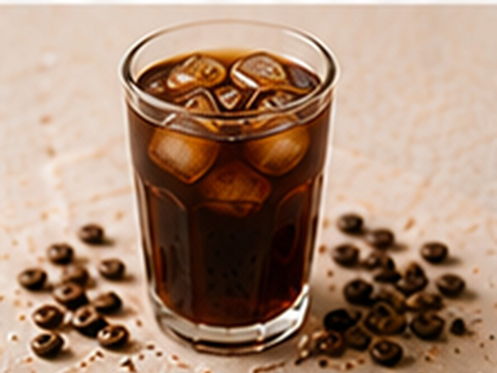

✨ KI-generiertes Bild Koffeinfrei & für KinderKoffeinfrei & für Kinder
Entkoffeinierter Cold Brew
Sanft, kalt, ohne Koffein.
⏱16 Std.
📶Einfach
☕1 Portion
🫘Zutaten
- Kaffee, entkoffeiniert, grob gemahlen100 g
- Wasser, kalt800 ml
📋Zubereitung
- 1Kaffee grob mahlen und mit kaltem Wasser übergießen.
- 216 Stunden im Kühlschrank ziehen lassen.
- 3Abseihen und servieren.
💡
Kaffee für dieses Rezept entdeckenLeNoKo Shop
→
Kaffee-Tipp
unseren El Trebol (entkoffeiniert) eignet sich auch für einen koffeinfreien Cold Brew.